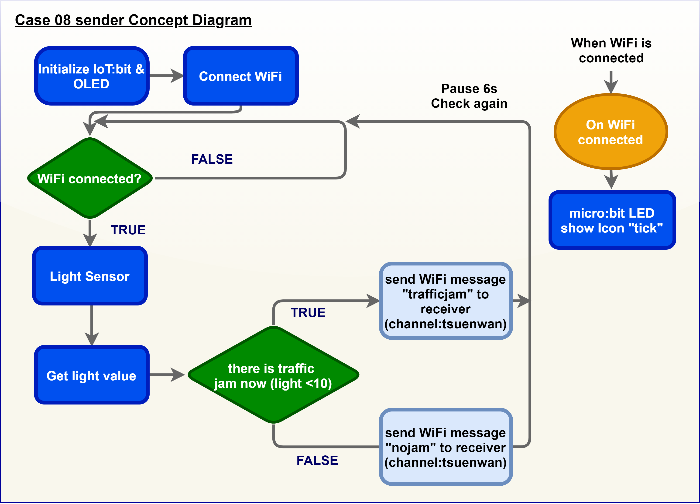
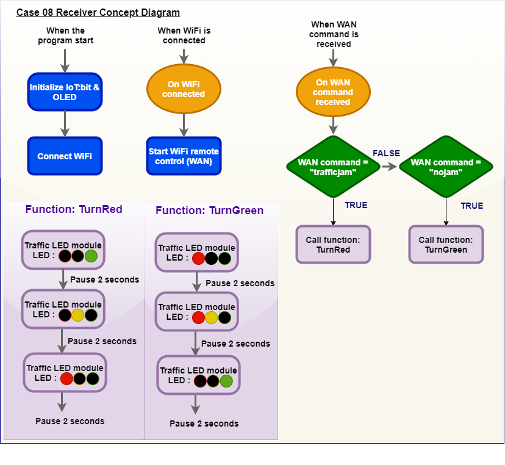
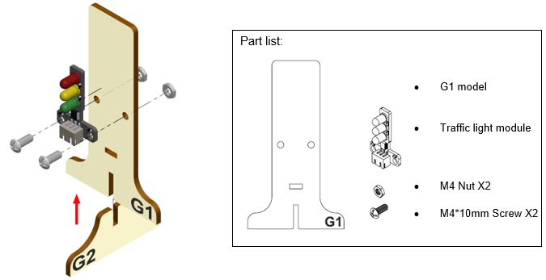

17. IoT Case 08: Automated Traffic Light¶
Level: 
* For more details, please refer to “Chapter 5: Object to Object communication”

17.1. Sender¶
17.1.1. Goal¶
Make a sender to send signal to another micro:bit to show if there is traffic jam or not.
17.1.2. Background¶
How to send signal to another micro:bit?
Micro:bit (sender and receiver) are connected to the same channel so wifi message can be sent between the micro:bit. Such that when the sender micro:bit sends a Wi-Fi message “trafficjam” to receiver micro:bit. When receiver micro:bit receives a WiFi message “trafficjam”, the connected traffic light will turn red.
Sender micro:bit operation
When the light value detected is too low, this would represent there is a traffic jam and and a ‘trafficjam’ wifi message to another microbit. When the light value detected is high, this would represent there is no traffic jam and send a “nojam” wifi message to another micro:bit.



17.1.6. Programming (MakeCode)¶
Step 1. Initialize OLED and IoT:bit and connect to WiFi
Snap
Initialize OLED with width:128, height: 64toon startSnap
Initialize IoT:bit TX P16 RX P8fromIoT:bittoon startSnap
Set Wi-Fi to ssid pwdfromIoT:bitEnter your Wi-Fi name and password. Here we set
smarthonasSSIDand12345678aspasswordSet variable
light2to 0 fromvariables
Step 2. Show icon “tick” after WiFi connection
Snap
show iconfrombasictoOn WiFi connectedand select icontick
Step 3. Check traffic status
Snap
if statementto blockforeverIf
WiFi is connected,Set
variable2tolight value from light sensor at P0Snap
clear OLED displayfromOLEDto avoid overlapSnap
show stringand show value of variableslight2Pause6000 (ms) to another checking
Step 4. Send notification when someone pass by
Snap
if statementSet
light<10in to if-condition (traffic jam is detected)Snap
WiFi Sender send channel… message…fromIoT:bit>channelSet channel to
tsuenwan, messagetrafficjamSet else-condition (traffic jam is not detected)
Snap
WiFi Sender send channel… message…fromIoT:bit>channelSet channel to
tsuenwan, messagenojam
Full Solution
MakeCode: https://makecode.microbit.org/_16MRP0RtHJjx
You could also download the program from the following website:
17.1.7. Result¶
Light sensor is used to detect if there are traffic jam. Once the light intensity is not low, it indicates that there is a traffic jam on the road. Wi-Fi message “nojam” will be sent to another micro:bit (receiver).

Once the light intensity is too low, it indicates that there is a traffic jam on the road. Wi-Fi message “trafficjam” will be sent to another micro:bit (receiver).

17.2. Receiver¶
17.2.2. Background¶
How to receive signal from another micro:bit?
Micro:bit (sender and receiver) are connected to the same channel so wifi message can be sent between the micro:bit. If receiver micro:bit receives a WiFi message “trafficjam” from sender, the connected traffic light will turn red.
Receiver micro:bit operation
When a wifi message “trafficjam” is received, it means there is traffic jam forward. The traffic LED Module will turn red. When a wifi message “nojam” is received, it means there is no traffic jam forward. The traffic LED Module will turn green. By using smart traffic light, the problem of traffic jam can be reduced as automatic traffic control is used.


17.2.4. Assembly step¶
Step 1
Attach the Traffic light Module to G1 model using M4 screw and nut. Put together all the cardboard parts (G1-G2)

Step 2
Assembly completed!


17.2.6. Programming (MakeCode)¶
Step 1. Initialize OLED and IoT:bit and connect to WiFi
Snap
Initialize OLED with width:128, height: 64toon startSnap
Initialize IoT:bit TX P16 RX P8fromIoT:bittoon startSnap
Set Wi-Fi to ssid pwdfromIoT:bitEnter your Wi-Fi name and password. Here we set
smarthonasSSIDand12345678aspasswordSet variable
oldmsgto “” fromvariables
Step 2. Join Channel “tsuenwan”
Snap
show iconfrombasictoOn WiFi connectedand select icontickSnap
WiFi Receiver join channelfromIoT>ChanelSet channel name
tsuenwan
Step 3. Receive WiFi message
Snap On WiFi Receiver received
Go to OLED
Snap the
clear OLED displaytoOn WiFi receivedto avoid overlapSnap the
show stringDraw variable
receivedMessageto show string placeholder
Step 4. Set up a new function (TurnRed)
Control traffic light at P1green on fromSmartCity>OutputPausefor 2000ms from basicControl traffic light at P1yellow on,pausefor 2000msControl traffic light at P1red on andpausefor 2000ms.
Step 5. Set up a new function (TurnGreen)
Control traffic light at P1red on fromSmartCity>OutputPausefor 2000ms from basicControl traffic light at P1red and yellow on,pausefor 2000msControl traffic light at P1green on andpausefor 2000ms.
Step 6. Set traffic light default status
Insert function
TurnGreentoon start
Step 7. Change traffic light status
Snap
if-statement, setreceived Message≠oldmsgtoif-conditionSet
oldmsg=receivedMessage(renew the latest traffic status)Snap another
if-statementSet
receivedMessage=trafficjamtoif-conditionCall function
TurnRedSet
receivedMessage=nojamtoelse-if-conditionCall function
TurnGreen
Full Solution
MakeCode: https://makecode.microbit.org/_Y4F6vH9qk7mw
You could also download the program from the following website:
17.2.7. Result¶
By receiving wifi message, traffic LED Module will turn to the corresponding colour automatically.
If there are no traffic jam ahead (detected by light sensor). Micro:bit (sender) will send wifi message “nojam” to the micro:bit (receiver). The traffic light will turn green.
If there are traffic jam ahead (detected by light sensor). Micro:bit (sender) will send wifi message “nojam” to the micro:bit (receiver). The traffic light will turn red.

17.2.8. Think¶
Q1. How can we add sound effect to the traffic LED Module according to the corresponding color?